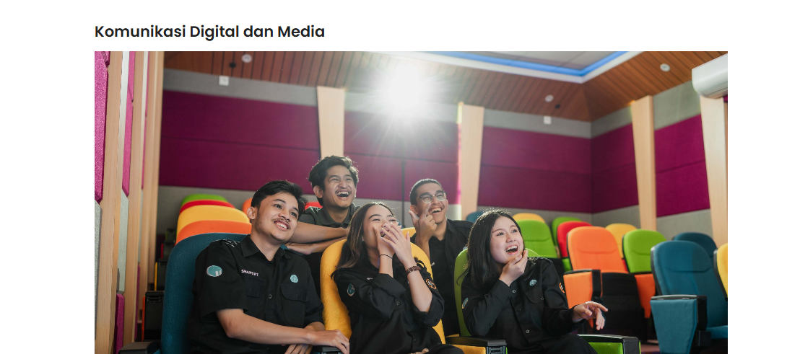
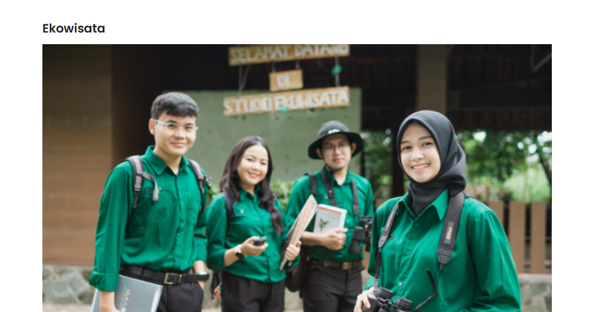
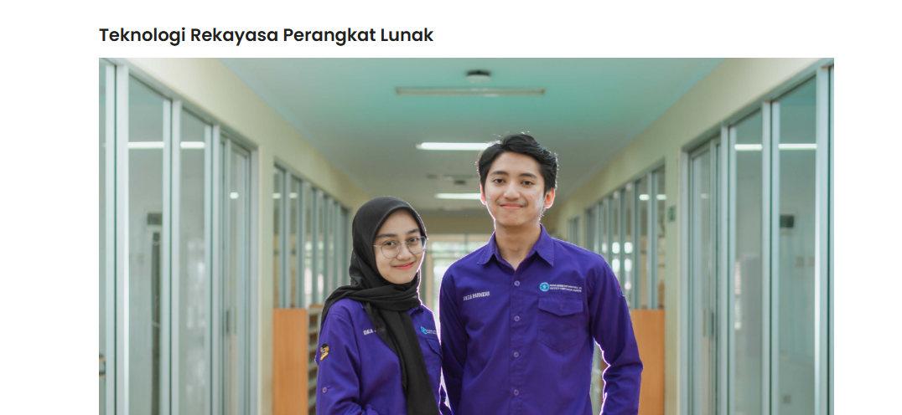
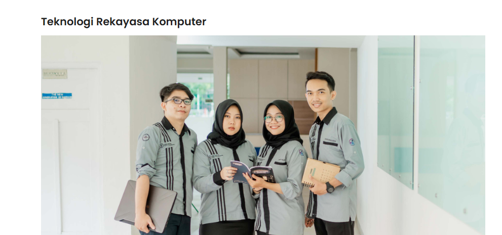

program studi di SV IPB
Komunikasi Digital dan media

Visi
Menghasilkan Lulusan Pendidikan Tinggi Vokasi bidang Komunikasi Digital dan Media yang unggul,
profesional, berwawasan global dan berkarakter Techno-socio entrepreneurial.
Misi
Menyelenggarakan pendidikan vokasi bidang Ilmu Komunikasi Digital dan Media berbudaya mutu, dalam rangka menghasilkan lulusan berdaya saing, berwawasan global dan berkarakter techno-socio entrepreneurial.
Mengembangkan kurikulum yang dapat menghasilkan lulusan yang adaptif, responsif, komunikatif, kreatif dan terampil serta siap kerja dengan kualitas terbaik di bidang Komunikasi Digital dan Media.
Mengembangkan riset terapan yang unggul, pembuatan karya dan perancangan inovasi di bidang Komunikasi Digital dan Media yang berorientasi pada kemajuan ilmu pengetahuan, serta teknologi bagi IDUKA, pemerintah, dan masyarakat
Mendorong pengaktualisasian potensi terbaik dan mengembangkan jejaring kerja sama dengan IDUKA di bidang Komunikasi Digital dan Media dalam upaya peningkatan kompetensi lulusan.
Menyelenggarakan kegiatan pengabdian kepada masyarakat yang unggul di bidang Komunikasi Digital dan Media.
pencapaian belajar
Menguasai konsep dasar komunikasi, baik secara teoritis maupun penerapannya untuk menyelesaikan masalah secara sistematis pada bidang komunikasi digital dan media;
Menguasai teknik dan metode komunikasi digital dan media untuk menjawab tantangan dunia usaha dan dunia industri komunikasi yang berwawasan global;
Mampu mengambil keputusan yang tepat berdasarkan analisis informasi dan komunikasi untuk menghasilkan solusi, baik secara mandiri maupun kelompok serta mampu menyajikan laporan sesuai dengan lingkup dan tanggung jawabnya;
Mampu menerapkan pemikiran logis, kritis, sistematis dan kreatif-inovatif dalam konteks pengembangan IPTEKS bidang komunikasi digital dan media;
Mampu bekerja, beradaptasi, tekun, disiplin dan agile learner dalam berbagai pekerjaan di bidang komunikasi digital dan media;
Mampu berkreasi-inovasi dan mengembangkan jejaring dalam membangun techno-socio entrepreuneurial di bidang komunikasi digital dan media;
Mampu mengaplikasikan keahlian secara spesifik, yang sesuai dengan standar dan prinsip-prinsip yang berlaku umum serta relevan di bidang komunikasi digital dan media;
Mampu mengaplikasikan kemampuan lisan, teknik penulisan, keahlian interpersonal, penguasaan teknologi komunikasi dan informasi, produksi media dan manajemen komunikasi digital dan media;
Mampu melakukan supervisi dan evaluasi terhadap pencapaian hasil pekerjaan yang menjadi tanggung, baik sebagai anggota atau pimpinan dalam suatu organisasi jawabnya di bidang komunikasi digital dan media.
Ekowisata

Visi
Menjadi Program Studi Vokasional Ekowisata terbaik tingkat ASEAN yang menghasilkan tenaga Sarjana Terapan dengan keterampilan serta kemampuan
bekerja yang unggul di bidang ekowisata dengan dasar konservasi sumber daya alam, ekonomi, dan sosial budaya.
misi
Menyiapkan insan terdidik yang memiliki pengetahuan dan keterampilan yang unggul, professional, dan berkarakter kewirausahaan di bidang pariwisata khsusnya ekowisata sesuai dengan kebutuhan masyarakat dan dunia kerja.
Mengembangkan IPTEKS terapan di bidang kepariwisataan dan ekowisata khususnya berdasarkan prinsip pengelolaan sumber daya berkelanjutan.
Mentransformasikan IPTEKS terapan yang inovatif dibidang kepariwisataan dan ekowisata untuk meningkatkan kualitas kehidupan masyarakat secara berkelanjutan.
Mengembangkan jejaring kerjasama kepariwisataan nasional dalam upaya peningkatan kompetensi lulusan.
Pencapaian belajar
Mampu merancang dan mengelola kawasan wisata, paket-paket dan program wisata sesuai dengan prinsip-prinsip ekowisata, melalui proses analisis potensi sumberdaya wisata dan pemilihan metode
yang sesuai, didukung dengan kemampuan di bidang manajemen, teknologi dan komunikasi.
Mampu menerapkan prinsip-prinsip ekowisata dan konsep-konsep lain yang relevan untuk menyelesaikan
masalah dan/ atau pekerjaan bidang ekowisata.
Teknologi rekayasa perangkat lunak

Visi
Menjadi program studi yang terdepan dan unggul di Indonesia dalam menyiapkan tenaga profesional sebagai Sarjana Terapan bidang Teknologi Rekayasa Perangkat Lunak yang ikut
mendukung penerapan teknologi di bidang pertanian, kelautan, dan biosains tropika tahun 2030.
misi
Menyelenggarakan pendidikan vokasi yang berkualitas untuk menyiapkan tenaga yang terampil dan terdidik di bidang Teknologi Rekayasa Perangkat Lunak yang berkontribusi terhadap bidang pertanian dalam arti luas sesuai dengan kebutuhan dunia kerja.
Menyelenggarakan penelitian terapan di bidang informatika mengacu pada kebutuhan, ilmu dan teknologi yang terus berkembang serta berkontribusi dalam bidang pertanian, kelautan, dan biosains tropika.
Menyelenggarakan pengabdian kepada masyarakat dalam menyebarluaskan hasil pendidikan dan hasil penelitian terapan di bidang informatika.
Menjalin kerjasama dengan lembaga pemerintahan dan/atau instansi terkait dengan pencapaian
kompetensi mahasiswa, penelitian terapan, pengabdian kepada masyarakat, dan lapangan pekerjaan bagi lulusan.
pencapaian belajar
Menyelenggarakan pendidikan vokasi yang berkualitas untuk menyiapkan tenaga yang terampil dan terdidik di bidang Teknologi Rekayasa Perangkat Lunak yang berkontribusi terhadap bidang pertanian dalam arti luas sesuai dengan kebutuhan dunia kerja.
Menyelenggarakan penelitian terapan di bidang informatika mengacu pada kebutuhan, ilmu dan teknologi yang terus berkembang serta berkontribusi dalam bidang pertanian, kelautan, dan biosains tropika.
Menyelenggarakan pengabdian kepada masyarakat dalam menyebarluaskan hasil pendidikan dan hasil penelitian terapan di bidang informatika.
Menjalin kerjasama dengan lembaga pemerintahan dan/atau instansi terkait dengan pencapaian kompetensi mahasiswa, penelitian terapan, pengabdian kepada masyarakat, dan lapangan pekerjaan bagi lulusan.
teknologi rekayasa perangkat komputer

visi
Menjadi program studi yang unggul dan terkemuka dalam menyiapkan SDM Sarjana Terapan yang profesional di bidang rekayasa cerdas pada sistem berbasis komputer modern serta berkarakter kewirausahaan
untuk mendukung sektor pertanian, kelautan, dan biosains tropika pada tahun 2030.
misi
Menyiapkan insan terdidik yang memiliki pengetahuan dan keterampilan di bidang rekayasa cerdas pada sistem berbasis komputer modern yang unggul, professional, dan berkarakter kewirausahaan di bidang pertanian, kelautan, dan biosains tropika
Mengembangkan ilmu dan teknologi terapan di bidang rekayasa cerdas pada sistem berbasis komputer modern yang unggul untuk sektor pertanian, kelautan, dan biosains tropika
Mengaplikasikan ilmu dan teknologi terapan di bidang rekayasa cerdas pada sistem berbasis komputer modern yang inovatif untuk peningkatan kualitas kehidupan masyarakat secara berkelanjutan
Menjalin kerja sama dengan berbagai pihak terkait teknologi rekayasa komputer untuk peningkatan kompetensi lulusan
pencapaian belajar
Menguasai pengetahuan dasar terkait rekayasa sistem komputer sehingga mampu menyelesaikan berbagai permasalahan yang dihadapi
Mampu membuat rancang bangun serta implementasi rekayasa cerdas pada sistem berbasis komputer modern sesuai kebutuhan pengguna
khususnya di bidang di bidang pertanian, kelautan, dan biosains tropika
Mampu membuat design, konfigurasi jaringan, monitoring jaringan serta mengamankan jaringan
Mampu bekerja sama dalam suatu tim, bertanggung jawab, terampil dalam memimpin serta senantiasa
melakukan evaluasi diri terhadap hasil kerja tim atas pekerjaan berkaitan dengan rekayasa cerdas pada sistem berbasis komputer modern di bidang pertanian, kelautan, dan biosains tropika